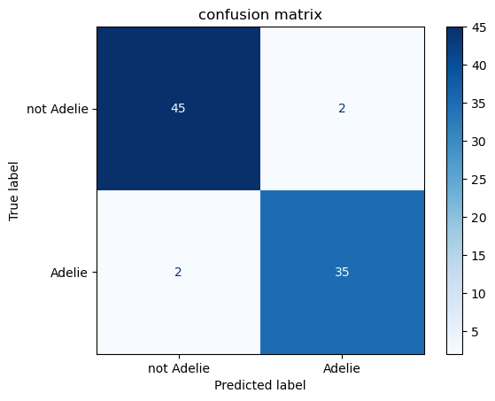
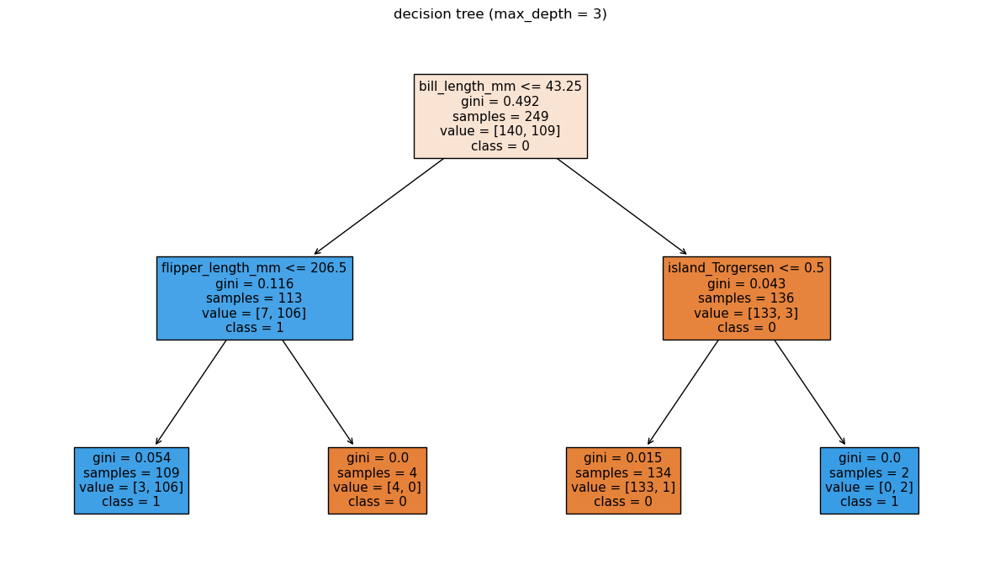
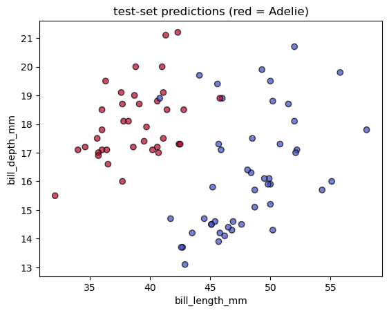
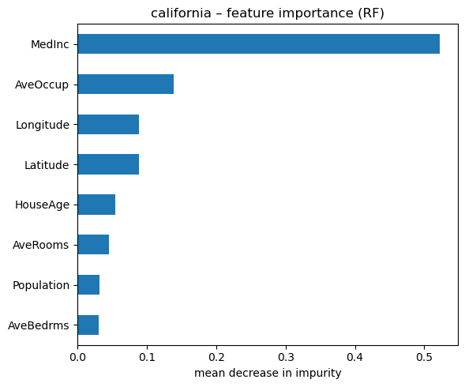
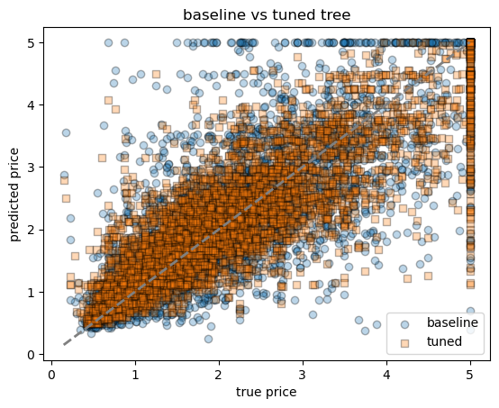
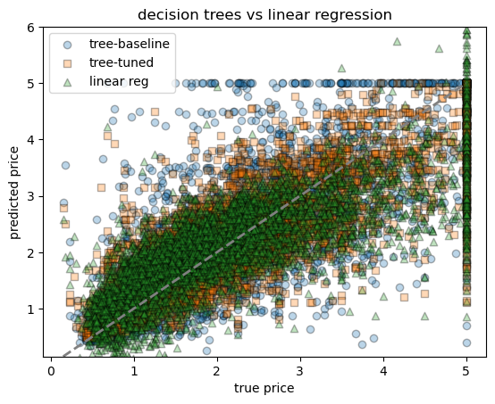
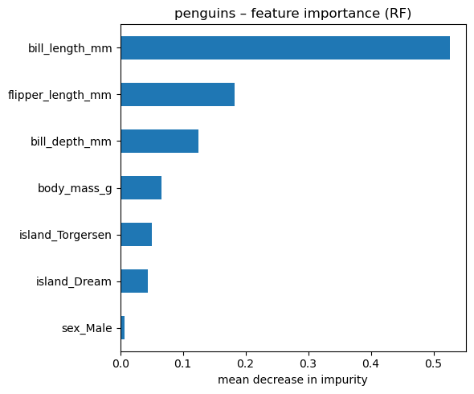
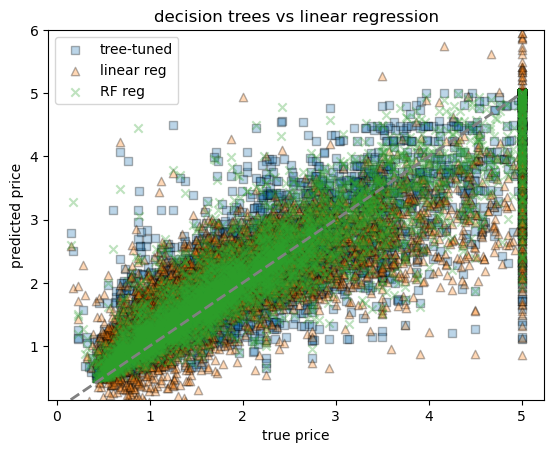
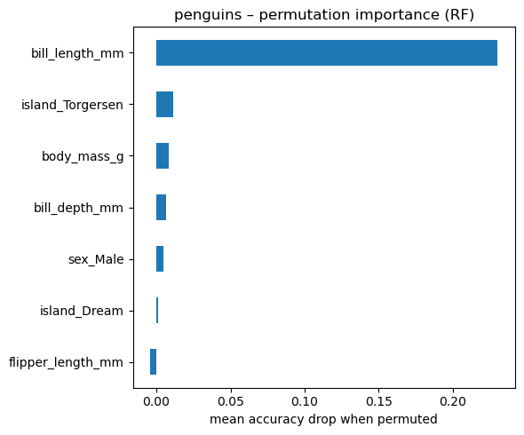
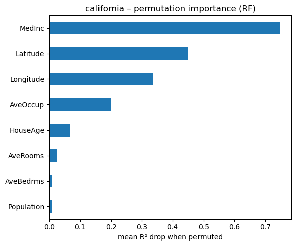

import numpy as np
import pandas as pd
import matplotlib.pyplot as plt
import seaborn as sns
from sklearn.tree import DecisionTreeClassifier, DecisionTreeRegressor, plot_tree
from sklearn.ensemble import RandomForestClassifier, RandomForestRegressor
from sklearn.model_selection import train_test_split, GridSearchCV, cross_val_score
from sklearn.metrics import (accuracy_score, confusion_matrix, ConfusionMatrixDisplay,
mean_squared_error, r2_score)
13 Decision trees
13.1 Classification example – detecting Adelie penguins
We’ll use the Palmer Penguins dataset (a friendlier drop-in replacement for Iris).
Goal : predict whether a penguin is Adelie (1) or another species (0) with a shallow decision-tree and examine its performance.
| species | island | bill_length_mm | bill_depth_mm | flipper_length_mm | body_mass_g | sex | |
|---|---|---|---|---|---|---|---|
| 0 | Adelie | Torgersen | 39.1 | 18.7 | 181.0 | 3750.0 | Male |
| 1 | Adelie | Torgersen | 39.5 | 17.4 | 186.0 | 3800.0 | Female |
| 2 | Adelie | Torgersen | 40.3 | 18.0 | 195.0 | 3250.0 | Female |
| 4 | Adelie | Torgersen | 36.7 | 19.3 | 193.0 | 3450.0 | Female |
| 5 | Adelie | Torgersen | 39.3 | 20.6 | 190.0 | 3650.0 | Male |
| ... | ... | ... | ... | ... | ... | ... | ... |
| 338 | Gentoo | Biscoe | 47.2 | 13.7 | 214.0 | 4925.0 | Female |
| 340 | Gentoo | Biscoe | 46.8 | 14.3 | 215.0 | 4850.0 | Female |
| 341 | Gentoo | Biscoe | 50.4 | 15.7 | 222.0 | 5750.0 | Male |
| 342 | Gentoo | Biscoe | 45.2 | 14.8 | 212.0 | 5200.0 | Female |
| 343 | Gentoo | Biscoe | 49.9 | 16.1 | 213.0 | 5400.0 | Male |
333 rows × 7 columns
# make binary target: 1 = adelie, 0 = other
penguins["is_adelie"] = (penguins["species"] == "Adelie").astype(int)
yp = penguins["is_adelie"]
yp0 1
1 1
2 1
4 1
5 1
..
338 0
340 0
341 0
342 0
343 0
Name: is_adelie, Length: 333, dtype: int64# one-hot encode remaining categoricals
Xp = penguins.drop(columns=["species", "is_adelie"])
print(penguins['island'].unique())
Xp = pd.get_dummies(Xp, drop_first=True)
Xp['Torgersen' 'Biscoe' 'Dream']| bill_length_mm | bill_depth_mm | flipper_length_mm | body_mass_g | island_Dream | island_Torgersen | sex_Male | |
|---|---|---|---|---|---|---|---|
| 0 | 39.1 | 18.7 | 181.0 | 3750.0 | 0 | 1 | 1 |
| 1 | 39.5 | 17.4 | 186.0 | 3800.0 | 0 | 1 | 0 |
| 2 | 40.3 | 18.0 | 195.0 | 3250.0 | 0 | 1 | 0 |
| 4 | 36.7 | 19.3 | 193.0 | 3450.0 | 0 | 1 | 0 |
| 5 | 39.3 | 20.6 | 190.0 | 3650.0 | 0 | 1 | 1 |
| ... | ... | ... | ... | ... | ... | ... | ... |
| 338 | 47.2 | 13.7 | 214.0 | 4925.0 | 0 | 0 | 0 |
| 340 | 46.8 | 14.3 | 215.0 | 4850.0 | 0 | 0 | 0 |
| 341 | 50.4 | 15.7 | 222.0 | 5750.0 | 0 | 0 | 1 |
| 342 | 45.2 | 14.8 | 212.0 | 5200.0 | 0 | 0 | 0 |
| 343 | 49.9 | 16.1 | 213.0 | 5400.0 | 0 | 0 | 1 |
333 rows × 7 columns
Note that the raw data list three islands, but after one-hot encoding we keep only two binary columns—the third island becomes the reference category. If both dummy columns are 0, the penguin is from that baseline island.
# split train / test
Xp_train, Xp_test, yp_train, yp_test = train_test_split(
Xp, yp, test_size=0.25, stratify=yp, random_state=42
)
depth = 10
clf = DecisionTreeClassifier(max_depth=depth, random_state=42)
clf.fit(Xp_train, yp_train)
# evaluate
yp_pred = clf.predict(Xp_test)
acc = accuracy_score(yp_test, yp_pred)
print(f"test accuracy = {acc:.3f}")test accuracy = 0.952# confusion-matrix
fig, ax = plt.subplots()
ConfusionMatrixDisplay.from_estimator(
clf, Xp_test, yp_test, display_labels=["not Adelie", "Adelie"],
cmap="Blues", ax=ax
)
ax.set_title("confusion matrix")Text(0.5, 1.0, 'confusion matrix')
# tree visualisation
fig, ax = plt.subplots(figsize=(12, 7))
plot_tree(
clf,
feature_names=Xp.columns,
class_names=["0", "1"],
filled=True,
impurity=True,
ax=ax,
)
ax.set_title(f"decision tree (max_depth = {depth})")
plt.tight_layout()

# simple 2-D scatter of test predictions for two bill metrics
fig, ax = plt.subplots()
scatter = ax.scatter(
Xp_test["bill_length_mm"],
Xp_test["bill_depth_mm"],
c=yp_pred,
cmap="coolwarm",
edgecolor="k",
alpha=0.7,
)
ax.set_xlabel("bill_length_mm")
ax.set_ylabel("bill_depth_mm")
ax.set_title("test-set predictions (red = Adelie)")Text(0.5, 1.0, 'test-set predictions (red = Adelie)')
13.1.1 Comparing to logistic regression
from sklearn.linear_model import LogisticRegression
# logistic regression (no need to tune here)
logreg = LogisticRegression(max_iter=1000, random_state=42)
logreg.fit(Xp_train, yp_train)
# evaluate
y_pred_logreg = logreg.predict(Xp_test)
acc_logreg = accuracy_score(yp_test, y_pred_logreg)
print(f"logistic regression accuracy = {acc_logreg:.3f} (tree depth {depth} gave {acc:.3f})")logistic regression accuracy = 0.988 (tree depth 10 gave 0.952)13.2 Regression example – predicting California house prices
We’ll switch to a continuous target: median house value (MedHouseVal, $ × 100 000) from the built-in California Housing dataset.
# load dataset
from sklearn.datasets import fetch_california_housing
cal = fetch_california_housing(as_frame=True)
Xh = cal.data
yh = cal.target
Xh| MedInc | HouseAge | AveRooms | AveBedrms | Population | AveOccup | Latitude | Longitude | |
|---|---|---|---|---|---|---|---|---|
| 0 | 8.3252 | 41.0 | 6.984127 | 1.023810 | 322.0 | 2.555556 | 37.88 | -122.23 |
| 1 | 8.3014 | 21.0 | 6.238137 | 0.971880 | 2401.0 | 2.109842 | 37.86 | -122.22 |
| 2 | 7.2574 | 52.0 | 8.288136 | 1.073446 | 496.0 | 2.802260 | 37.85 | -122.24 |
| 3 | 5.6431 | 52.0 | 5.817352 | 1.073059 | 558.0 | 2.547945 | 37.85 | -122.25 |
| 4 | 3.8462 | 52.0 | 6.281853 | 1.081081 | 565.0 | 2.181467 | 37.85 | -122.25 |
| ... | ... | ... | ... | ... | ... | ... | ... | ... |
| 20635 | 1.5603 | 25.0 | 5.045455 | 1.133333 | 845.0 | 2.560606 | 39.48 | -121.09 |
| 20636 | 2.5568 | 18.0 | 6.114035 | 1.315789 | 356.0 | 3.122807 | 39.49 | -121.21 |
| 20637 | 1.7000 | 17.0 | 5.205543 | 1.120092 | 1007.0 | 2.325635 | 39.43 | -121.22 |
| 20638 | 1.8672 | 18.0 | 5.329513 | 1.171920 | 741.0 | 2.123209 | 39.43 | -121.32 |
| 20639 | 2.3886 | 16.0 | 5.254717 | 1.162264 | 1387.0 | 2.616981 | 39.37 | -121.24 |
20640 rows × 8 columns
0 4.526
1 3.585
2 3.521
3 3.413
4 3.422
...
20635 0.781
20636 0.771
20637 0.923
20638 0.847
20639 0.894
Name: MedHouseVal, Length: 20640, dtype: float64# train/test split
Xh_train, Xh_test, yh_train, yh_test = train_test_split(
Xh, yh, test_size=0.25, random_state=42
)
reg = DecisionTreeRegressor(random_state=42)
reg.fit(Xh_train, yh_train)
# evaluate
yh_pred = reg.predict(Xh_test)
rmse = mean_squared_error(yh_test, yh_pred, squared=False)
r2 = r2_score(yh_test, yh_pred)
print(f"baseline tree RMSE = {rmse:.3f}, R² = {r2:.3f}")
baseline tree RMSE = 0.727, R² = 0.601# scatter of true vs predicted
fig, ax = plt.subplots()
ax.scatter(yh_test, yh_pred, alpha=0.4, edgecolor="k")
ax.plot([yh.min(), yh.max()], [yh.min(), yh.max()], lw=2, ls="--")
ax.set_xlabel("true price")
ax.set_ylabel("predicted price")
ax.set_title("baseline decision-tree regression")
Text(0.5, 1.0, 'baseline decision-tree regression')
13.2.1 small example of hyperparameter tuning
# quick hyper-parameter sweep: depth & min_samples_leaf
param_grid = {
"max_depth": [3, 5, 8, None],
"min_samples_leaf": [1, 5, 20],
}
grid = GridSearchCV(
DecisionTreeRegressor(random_state=42),
param_grid,
cv=5,
scoring="neg_root_mean_squared_error",
n_jobs=-1,
)
grid.fit(Xh_train, yh_train)
print("best params:", grid.best_params_)
print("cv RMSE:", -grid.best_score_)
# refit best tree on full training data and re-evaluate
best_reg = grid.best_estimator_
yh_pred_best = best_reg.predict(Xh_test)
rmse_best = mean_squared_error(yh_test, yh_pred_best, squared=False)
r2_best = r2_score(yh_test, yh_pred_best)
print(f"tuned tree → RMSE = {rmse_best:.3f}, R² = {r2_best:.3f}")
# compare baseline vs tuned in one plot
fig, ax = plt.subplots()
ax.scatter(yh_test, yh_pred, alpha=0.3, label="baseline", edgecolor="k")
ax.scatter(yh_test, yh_pred_best, alpha=0.3, label="tuned", marker="s", edgecolor="k")
ax.plot([yh.min(), yh.max()], [yh.min(), yh.max()], lw=2, ls="--", color="grey")
ax.set_xlabel("true price")
ax.set_ylabel("predicted price")
ax.set_title("baseline vs tuned tree")
ax.legend()best params: {'max_depth': None, 'min_samples_leaf': 20}
cv RMSE: 0.6138382784769062
tuned tree → RMSE = 0.611, R² = 0.718<matplotlib.legend.Legend at 0x7f798473a5b0>
13.2.2 Comparing to linear regression
# ------------------------------------------------------------------
# multiple linear regression
# ------------------------------------------------------------------
from sklearn.linear_model import LinearRegression
linreg = LinearRegression()
linreg.fit(Xh_train, yh_train)
# evaluate
yh_pred_lr = linreg.predict(Xh_test)
rmse_lr = mean_squared_error(yh_test, yh_pred_lr, squared=False)
r2_lr = r2_score(yh_test, yh_pred_lr)
print(f"linear regression → RMSE = {rmse_lr:.3f}, R² = {r2_lr:.3f}")
# ------------------------------------------------------------
# scatter plot comparing all three models
fig, ax = plt.subplots()
ax.scatter(yh_test, yh_pred, alpha=0.3, label="tree-baseline", marker="o", edgecolor="k")
ax.scatter(yh_test, yh_pred_best, alpha=0.3, label="tree-tuned", marker="s", edgecolor="k")
ax.scatter(yh_test, yh_pred_lr, alpha=0.3, label="linear reg", marker="^", edgecolor="k")
ax.plot([yh.min(), yh.max()], [yh.min(), yh.max()], lw=2, ls="--", color="grey")
ax.set_ylim(yh.min(), 6)
ax.set_xlabel("true price")
ax.set_ylabel("predicted price")
ax.set_title("decision trees vs linear regression")
ax.legend()linear regression → RMSE = 0.736, R² = 0.591<matplotlib.legend.Legend at 0x7f7984505190>
13.3 Ensembles – Random-Forest
A forest averages many decorrelated trees to cut variance.
We reuse the same training / test splits from Sections 1 & 2 and compare:
- Classification: accuracy boost vs single tree
- Regression: RMSE boost vs single tree
- Interpretability: bar-plot of
feature_importances_
13.3.1 🔍 What is it?
Random Forest is an ensemble machine learning algorithm used for classification and regression. It builds many decision trees and combines their outputs to improve accuracy and reduce overfitting.
13.3.2 🌲 How does it work?
Bootstrap sampling: For each tree, a random sample (with replacement) of the data is selected.
Random feature selection: At each split in the tree, only a random subset of features is considered.
Tree building: Each tree is grown to its full depth (or limited depth).
Aggregation:
- For regression: average predictions from all trees.
- For classification: majority vote from all trees.
13.3.3 🔧 Key parameters
n_estimators: number of trees in the forest.max_depth: maximum depth of each tree.max_features: number of features to consider at each split.min_samples_split: minimum samples required to split an internal node.bootstrap: whether to use bootstrap samples.
13.3.4 classification – random-forest on penguins
rf_clf = RandomForestClassifier(
n_estimators=200,
max_depth=None,
random_state=42,
n_jobs=-1,
)
rf_clf.fit(Xp_train, yp_train)
# accuracy
yp_pred_rf = rf_clf.predict(Xp_test)
acc_rf = accuracy_score(yp_test, yp_pred_rf)
print(f"single tree accuracy = {acc:.3f}")
print(f"random-forest accuracy = {acc_rf:.3f}")
# feature-importance plot
importances = (
pd.Series(rf_clf.feature_importances_, index=Xp.columns)
.sort_values()
)
fig, ax = plt.subplots(figsize=(6, 5))
importances.tail(15).plot.barh(ax=ax) # show top 15
ax.set_xlabel("mean decrease in impurity")
ax.set_title("penguins – feature importance (RF)")
plt.tight_layout()single tree accuracy = 0.952
random-forest accuracy = 0.976
13.3.5 regression random forest on california housing
rf_reg = RandomForestRegressor(
n_estimators=200,
max_depth=None,
random_state=42,
n_jobs=-1,
)
rf_reg.fit(Xh_train, yh_train)
# test metrics
yh_pred_rf = rf_reg.predict(Xh_test)
rmse_rf = mean_squared_error(yh_test, yh_pred_rf, squared=False)
r2_rf = r2_score(yh_test, yh_pred_rf)
print(f"random-forest RMSE = {rmse_rf:.3f} (single tree was {rmse_best:.3f}, linear reg was {rmse_lr:.3f})")
print(f"random-forest R² = {r2_rf:.3f} (single tree was {r2_best:.3f}, linear reg was {r2_lr:.3f})")random-forest RMSE = 0.502 (single tree was 0.611, linear reg was 0.736)
random-forest R² = 0.809 (single tree was 0.718, linear reg was 0.591)# scatter plot comparing all three models
fig, ax = plt.subplots()
# ax.scatter(yh_test, yh_pred, alpha=0.3, label="tree-baseline", marker="o", edgecolor="k")
ax.scatter(yh_test, yh_pred_best, alpha=0.3, label="tree-tuned", marker="s", edgecolor="k")
ax.scatter(yh_test, yh_pred_lr, alpha=0.3, label="linear reg", marker="^", edgecolor="k")
ax.scatter(yh_test, yh_pred_rf, alpha=0.3, label="RF reg", marker="x", edgecolor="k")
ax.plot([yh.min(), yh.max()], [yh.min(), yh.max()], lw=2, ls="--", color="grey")
ax.set_ylim(yh.min(), 6)
ax.set_xlabel("true price")
ax.set_ylabel("predicted price")
ax.set_title("decision trees vs linear regression")
ax.legend()/var/folders/hc/jhnmlst937d27zzq9fhfks780000gn/T/ipykernel_80308/2102192251.py:6: UserWarning: You passed a edgecolor/edgecolors ('k') for an unfilled marker ('x'). Matplotlib is ignoring the edgecolor in favor of the facecolor. This behavior may change in the future.
ax.scatter(yh_test, yh_pred_rf, alpha=0.3, label="RF reg", marker="x", edgecolor="k")<matplotlib.legend.Legend at 0x7f79857d7520>
# importance plot
importances_reg = pd.Series(rf_reg.feature_importances_, index=Xh.columns).sort_values()
fig, ax = plt.subplots(figsize=(6, 5))
importances_reg.tail(15).plot.barh(ax=ax)
ax.set_xlabel("mean decrease in impurity")
ax.set_title("california – feature importance (RF)")
plt.tight_layout()
13.3.6 1. Mean Decrease in Impurity (MDI) — aka Gini Importance
This is the default method in most Random Forest implementations (like scikit-learn).
- Every time a feature is used to split a node, the impurity (e.g., Gini impurity or variance) decreases.
- The total decrease in impurity is summed up for each feature across all trees, and then averaged.
- Features used in splits that reduce impurity more often and by a larger amount get higher scores.
13.3.7 2. Permutation Importance
This is a model-agnostic approach that works by measuring how performance drops when you randomly shuffle a single feature.
Steps:
Train the model as usual.
Compute the model’s performance on a validation set (e.g., RMSE, accuracy).
For each feature:
- Shuffle its values across all observations (break the relationship with the target).
- Measure how much the model’s performance degrades.
The larger the drop, the more important the feature.
# permutation importance on the classification forest
from sklearn.inspection import permutation_importance
result = permutation_importance(
rf_clf,
Xp_test,
yp_test,
n_repeats=50,
n_jobs=-1,
random_state=42,
)
perm_imp = (
pd.Series(result.importances_mean, index=Xp.columns)
.sort_values()
)
# bar plot – compare with impurity importance
fig, ax = plt.subplots(figsize=(6, 5))
perm_imp.tail(15).plot.barh(ax=ax)
ax.set_xlabel("mean accuracy drop when permuted")
ax.set_title("penguins – permutation importance (RF)")
plt.tight_layout()
# permutation importance on the regression forest
from sklearn.inspection import permutation_importance
result_reg = permutation_importance(
rf_reg,
Xh_test,
yh_test,
n_repeats=50,
n_jobs=-1,
random_state=42,
)
perm_imp_reg = (
pd.Series(result_reg.importances_mean, index=Xh.columns)
.sort_values()
)
fig, ax = plt.subplots(figsize=(6, 5))
perm_imp_reg.tail(15).plot.barh(ax=ax)
ax.set_xlabel("mean R² drop when permuted")
ax.set_title("california – permutation importance (RF)")
plt.tight_layout()